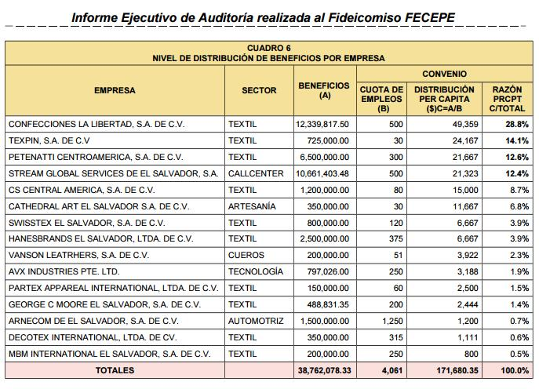

| Nacionales | Señalamientos de auditoría del BCR |
|
Auditoría señala poca transparencia en asignación de fondos FECEPE
El estudio muestra al menos nueve irregularidades que se encuentran en el manejo de los $38.7 millones que tuvo a su cargo el fideicomiso que manejó el BMI. Así como la preferencia por el sector textil.
El Fideicomiso Especial para la Creación de Empleo en Sectores Productivos Estratégicos (FECEPE) fue un fondo creado para potenciar a algunas empresas y éstas -a cambio- tenían el compromiso de otorgar al menos 250 empleos y pagar a sus trabajadores al menos $200 mensuales. Las empresas recibieron, de parte del Estado, ayuda monetaria para incentivar a estos sectores.
Inicialmente el fondo consistía en repartir $4.5 millones en cuatro años a las empresas, para incentivarlas en sus operaciones, generación de empleo y potenciar sus exportaciones.
Al finalizar el proyecto, el Banco Central de Reserva (BCR) realizó una auditoría, ya que el BMI es una entidad relacionada al BCR. La misma auditoría señala que la responsabilidad recae sobre la administración del BMI y de otros funcionarios que conformaron el Comité Calificador, entre los que se encontraba la actual diputada Ana Vilma de Escobar y el expresidente del BMI, Nicola Angelucci, entre otros.
El periodo auditado fue entre el 1 de junio de 2004 al 31 de mayo de 2009. El documento señala que para realizarla se revisó documentación obtenida del BMI, planillas del Seguro Social, informes de auditorías externas de los fideicomisos, informe de liquidación del BMI, información obtenida en el Centro Nacional de Registro (CNR) sobre los accionistas y estados financieros de las empresas beneficiadas.
La auditoría señaló al menos 9 irregularidades de distinta dimensión y característica, donde se cuestiona la transparencia en los recursos.
Uno de los primeros hallazgos es que la Asamblea Legislativa otorgó para este fondo $4.5 millones. No obstante, en el camino, fueron erogando cantidades de la partida de gastos imprevistos, o mejor conocido como la “partida secreta” presidencial. Esto fue aprobado por la otrora viceministra de Hacienda, Carmen Regina de Arévalo (siendo ésta a su vez parte del miembro del comité calificador de las empresas).
En este sentido, la ley establecía que esta partida podría reorientarse siempre y cuando se compruebe que es para imprevistos, así como que se compruebe que sea una necesidad prioritaria para el país. Ya que iba a ser destinado para un fideicomiso para empresas, no era un asunto prioritario si se compara con los rubros de Salud, Seguridad y Educación.
Empresas beneficiadas
Otra de las irregularidades es que no se encontró evidencia de un proceso transparente de difusión y acceso a los fondos del fideicomiso, y los criterios de asignación no fueron uniformes.
“No se obtuvo evidencia o información sobre el mecanismo de comunicación o llamamiento para que las empresas de los sectores productivos estratégicos accedieran a los beneficios”, señala la auditoria, así como los criterios de asignación de los diferentes beneficios otorgados que justificaron el apoyo recibido, a fin de evitar discrecionalidades en la selección de los beneficiarios, en los rubros o conceptos bajo los que se asignaron los bonos”, señala el estudio.

Asimismo, señala que se pudo comprobar que el 43% de los fondos fueron destinados a propietarios comunes de 8 empresas en grupos de dos; es decir que aun cuando eran 15 beneficiados, los fondos fueron distribuidos a unos pocos accionistas, siendo por tanto 12 accionistas de 15 empresas los beneficiados.
En este punto, además el estudio identificó que además había conflicto de intereses entre las partes involucradas; es decir, entre el comité calificador y los dueños de las empresas.
Así, por ejemplo, las personas Eduardo Ernesto Telles y Karla Sofía Avilés Ventura, ambos propietarios de las empresas Vanson Leatrhers, S.A. de C.V. y Texpin, S.A. DE C.V (dos empresas beneficiadas), tienen un vínculo familiar con funcionarios del BMI ya que el primero es hermano de Manuel Francisco Telles Suvillaga apoderado del BMI.
Otro de los que aparecen señalados es Giancarlo Angelucci Silva, quien es el apoderado de tres de las empresas beneficiadas, CS Central America, S.A. DE C.V., Petenatti Centroamérica, S.A. de C.V. y Vanson Leatrhers, S.A. de C.V., y a su vez es el hermano del expresidente del BMI Nicola Angelucci Silva.
Incumplimiento en contrataciones
Uno de los requisitos más importantes para que a estas empresas se les asignaran los beneficios con el fondo es que produjeran cierta cantidad de empleos y que la paga fuera mayor a $200. Sin embargo, muchas de las empresas no cumplieron el compromiso y no tuvieron las sanciones respectivas. “FECEPE no exigió la restitución o reintegro de los fondos entregados a las empresas”, reza el estudio.
Así, la auditoría que diez empresas no cumplieron con el cupo mínimo de empleos requeridos en los convenios. Y luego detalla cada uno de los faltantes. Por ejemplo, para el caso de la empresa Arnecom de El Salvador S.A, de C.V. en el único año que estuvo en funcionamiento después que se firmó el convenio con FECEPE (2008) alcanzó en promedio sólo 707 empleos nuevos de los 1250 requeridos y en el mes de abril de 2008 alcanzó el máximo número de empleos 833.
El estudio asegura que la empresa Cathedral Art de El Salvador firmó convenio con FECEPE en junio de 2008, sin embargo en el 2009 presentó un promedio de 29 empleos incumpliendo el requisito de 30 empleos. En los meses de marzo de 2009 alcanzó los 30 empleos, pero en abril y mayo de 2009 sólo 28.
Otro de los casos señalados es a MBM International El Salvador, S.A. de C.V. su compromiso fue de 195 nuevos empleos; sin embargo solo llegó a generar en promedio 110 empleos para el año 2009. Por otro lado la empresa Partex Appereal su compromiso fue de 60 nuevos empleos, era un empresa ya constituida y solo generó un promedio de 22 empleados el máximo generado fue de 33 en el mes de mayo 2009.
Otra de las empresas que faltó fue Hanesbrands El Salvador, LTDA. DE C.V., a pesar de ser un empresa con más de mil empleados laborando entre nuevos y antiguos, sin embargo en el 2009, año el en que debió cumplir el requisito de 375 nuevos empleos alcanzó en promedio sólo 284.
Por otro lado otro de los señalamientos fue una distribución del fideicomiso no equitativa y no fundamentada. Uno de los casos más evidentes fue el caso de las empresas Confecciones la Libertad que en alianza con Hanesbrands recibieron $14.8 millones, y en concepto de compensación de externalidades recibieron $10.4 millones. Esa cantidad representa el 76% del total de fondos entregados en ese concepto a las 15 empresas.
Asimismo, se evidencia que de las 15 empresas beneficiadas, en su mayoría pertenecen al sector textil, ya que 10 pertenecían a este rubro.
Estos son solo algunos de los hallazgos encontrados en el estudio realizado en la auditoría interna. No obstante, hay una serie de irregularidades más.
Finalmente, el documento señala como conclusión: “De la evaluación realizada se determinó que no hubo transparencia en el proceso”. Asimismo, afirma hubo incumplimiento de parte de los beneficiaros y asegura estas recibieron beneficios directos. “Se concluye por tanto que los bienes fideicomisos de FECEPE fue una donación o un subsidio directo a las empresas beneficiadas y el incumplimiento a los convenios deberán de ser resarcidos”, subraya.
Si bien es cierto este documento es interno. Cuando el ministro de Economía de la época (2014) debía firmar el finiquito, ya para ese entonces era Armando Flores el titular, este ante las irregularidades decide enviar los hallazgos a la Fiscalía y a la Corte de Cuentas.
La Corte concluye que por ley no puede investigar y proceder con hechos ocurridos más de cinco años atrás del momento de la denuncia por lo que la cataloga como “caduca” la información. Por otro lado, en la Fiscalía sí existe un expediente FECEPE que aún continúa investigándose.
Noticias Relacionadas:
| Enviar a un amigo | Imprimir | Compartir |
Pedro Ayal | 2015-10-26 21:00:58
TERENGOS YA DEJEN EN PAZ A LA JIRAFA. | 2015-10-26 20:55:53
Macario Flores | 2015-10-26 20:11:02
Arena afirma, que dar el vasito de leche, zapatitos, cuadernos y uniformes a los ninos/as campesinos y en las zonas urbanas mas pobres del pais, es toda una mala inversion. Pero que $ 38.7 millones se los roben miembros de ARENA es buena inversion.
Y LOS CHAMPEROS QUE VIVEN EN LAS RIVERAS DEL RIO QUE CRUZA SAN SALBADOR SE HAN PERDIDO. | 2015-10-26 20:00:38
QUE LES PASA A LOS ARENEROS QUE VIVEN EN LAS RIVERAS DEL RIO AQUEL... en una entrevista en TCS dijo el DR NAVARRO. antes se podian ver unos camarones bien grandes en el rio aselguate... pero hoy no es eso lo que usted ve hoy es otra cosa. jajajjajajajajjajaj
Miguel | 2015-10-26 18:55:44
ME IMAGINO QUE LOS OTROS PERIODICOS VAN REPRODUCIR ESTA NOTICIA CON SENDOS TITULARES EN A PRIMERA PAGINA. MO DICE MAURICIO FUNES SON 17 MIL FUNCIONARIOS Y CABAL SOLO UNOS POCOS SON INVESTIGADOS, TODOS DEBERAN DE SR INVESTIGADOS PERO NO CON DOLO COMO HACEN LOS MEDIOS DE INTOXICACION, NORMAL COMO A CUALQUIERA.... COMO NO ES DE ARENA LO SACO EN LOS TITULARES Y AL OTRO SI.
solo con los dineros robados por todos lados podriamos resolver todos los problemas que tenemos en el pais | 2015-10-26 18:08:16
LA CHANCLETUDA VILMA TOPADA HASTA EL MORRO... Y FALTA LOS INFONCENTROS ??? | 2015-10-26 17:38:50
Moris Antonio | 2015-10-26 17:35:41
mardoqueo | 2015-10-26 17:22:28
mardoqueo | 2015-10-26 17:19:06
Viuda Negra | 2015-10-26 16:39:19
Rolando | 2015-10-26 16:01:54
CREYERON QUE NUNCA LOS DESCUBRIRIAN | 2015-10-26 15:57:31
Afredo | 2015-10-26 15:41:59
Donde estas los ARENEROS de Chamapa? | 2015-10-26 14:35:03
LO MÁS LEÍDO |
LO MÁS COMENTADO |
Eligen a la Miss BumBum 2015
Presentan nueva denuncia contra hospital Ginecológico por caso de bebés cambiados
Desmantelan “troll center” en el que se clonó página web de La Prensa Gráfica
Familia obligaba a seis de sus miembros a prostituirse
Familias huyen de sus casas porque “de lo contrario la bestia los llegará a asesinar”
Finaliza jornada de audiencia contra Francisco Flores y se reanudará mañana
Difunden imágenes de supuestos pandilleros que operan en Lourdes y otras de mareros de San Miguel

Entrevista con diputado de ARENA
Portillo Cuadra: El FMLN y sus aliados quieren tomarse la empresa privada y ser ellos los empresarios
El diputado de la fracción tricolor reacciona ante las posturas que se identificaron como grandes lineamientos en la pasada Convención del partido oficial.OPINION
|
|
Pastor Toby jr. |
|
|
Geovani Galeas |
|
|
Melvin González Los evasores de impuestos no son "perseguidos políticos", son criminales según la ley |
|
|
Marvin Aguilar |
ENCUESTA
¿Crees que debe castigarse con cárcel a quienes no paguen impuestos al Estado? |